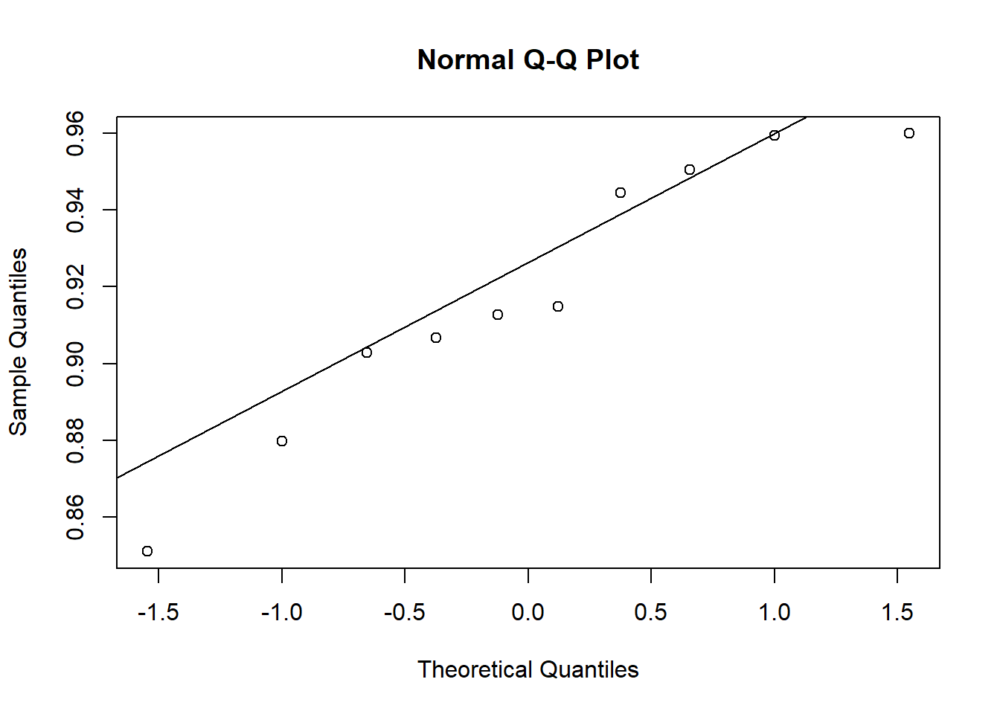
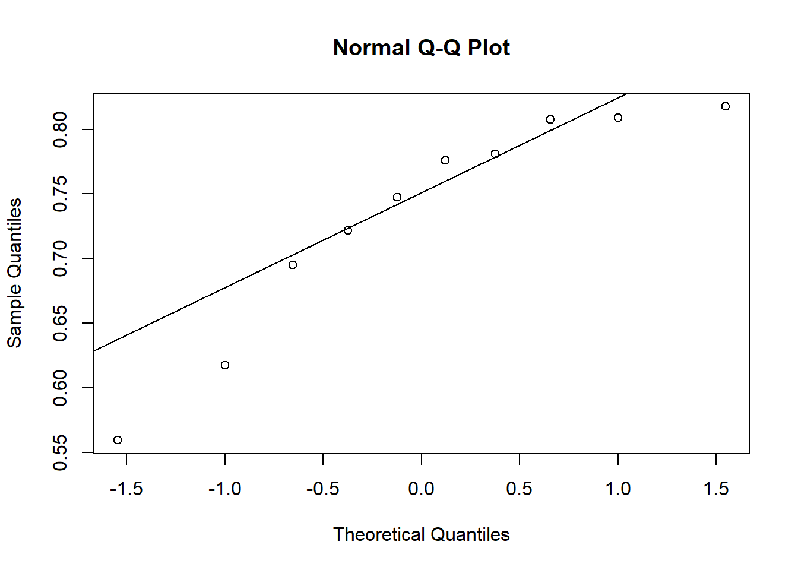

library(magrittr) # para usar pipes
library(ggplot2) # para gráficos
library(dplyr)
library(readxl)
library(tidyr)Análises estatísticas
Tipos de testes para análise estatística
Veremos nesta aula os tipos de análise de acordo com o número e tipo de variáveis independentes (níveis do fator) e também o número de tratamentos ou grupos a serem comparados.
Teste T
O teste t compara DUAS MÉDIAS (2 tratamentos) e mostra se as diferenças entre essas médias são significativas. Como todo teste estatístico, o teste t também tem como produto a medida do valor de p. Ou seja, no final das contas, teremos calculado a probabilidade da diferença encontrada (entre as médias) terem sido por acaso. Existem 2 tipos mais comuns de teste t:
teste t para 2 amostras dependentes (ou pareadas): compara as médias da mesma população em diferentes momentos de tempo (ex.: antes e depois).
teste t para 2 amostras independentes (ou não pareadas): compara as médias de duas populações distintas.
Os termos paramétrico e não-paramétrico referem-se à média e ao desvio-padrão, que são os parâmetros que definem as populações que apresentam distribuição normal. Veremos como trabalahar nessas duas diferentes sutuações.
Dois tratamentos independentes
Situação:Um pesquisador conduziu um experimento com o objetivo de avaliar o efeito de um micronutriente, o magnésio (Mg), adicionado na solução do solo cultivado com plantas de arroz, no manejo de uma doença fúngica. O experimento foi conduzido em delineamento inteiramente casualizado com 10 repetições, sendo cada repetição um vaso de planta. Um dos tratamentos é o chamado controle, ou testemunha, sem o suplemento mineral. O segundo é aquele com o suplemento do Mg na dose de 2 mM. Em cada uma das repetições foi obtido um valor médio do comprimento de lesões em um determinado tempo após a inoculação.
Preparo pré-análise: carregamento de pacotes e importação do conjunto de dados.
data_mg <- read_excel("dados-diversos.xlsx")
head(data_mg)# A tibble: 6 × 3
trat rep comp
<chr> <dbl> <dbl>
1 Mg2 1 9
2 Mg2 2 12.5
3 Mg2 3 10
4 Mg2 4 8
5 Mg2 5 13.2
6 Mg2 6 11 Agora, vamos começar a trabalhar esses dados e obter estatísticas que descrevem o conjunto de dados, seja a tendência central ou a dispersão dos dados. Neste caso, trabalhamos com a média (mean), variância (var), desvio padrão (sd), erro padrão (se) e intervalo de confiança (ci). O intervalo de confiança é apenas para inferência visual.
data2 <- data_mg %>%
group_by(trat) %>%
summarise(
mean_com = mean(comp),
sd_comp = sd(comp),
var_comp = var(comp),
n = n(),
se_comp = sd_comp / sqrt(n - 1),
ci = se_comp * qt(0,025, df = 9))
data2# A tibble: 2 × 7
trat mean_com sd_comp var_comp n se_comp ci
<chr> <dbl> <dbl> <dbl> <int> <dbl> <dbl>
1 Mg2 10.5 1.54 2.39 10 0.515 -Inf
2 control 15.7 1.27 1.61 10 0.424 -InfVisualização: A maneira mais simples é visualizar, no caso de mais de 6 repetições, usando boxplots juntamente com os dados de cada repetição. Aqui visualizaremos os dados em gráfico de barras vertical com erro padrão.
data2 |>
ggplot(aes(trat, mean_com)) +
geom_col(width = 0.5,
fill = "steelblue") +
geom_errorbar(aes(
ymin = mean_com - se_comp,
ymax = mean_com + se_comp),
width = 0.1) +
ylim(0,20) +
labs(x = "", y = "Mean size (mm)")Intervalo de confiança: Agora visualizamos os dados com o ci. Abaixo, as barras verticais representam o intervalo de confiança 95%.
data2 |>
ggplot(aes(trat, mean_com)) +
geom_col(width = 0.5, fill = "steelblue") +
geom_errorbar(aes(
ymin = mean_com - ci,
ymax = mean_com + ci),
width = 0.1) +
ylim(0,20) +
labs(x = "", y = "Mean size (mm)")O conjunto de dados está no formato largo, assim a variável resposta de interesse está apenas em uma coluna. Existem várias formas de separar em dois vetores os dados de resposta para cada tratamento. Uma delas é por meio da função pivot_winder, a qual coloca as respostas em duas colunas, uma para cada tratamento. Para isso, criaremos o conjunto data_mg2. Agora é posspivel visualizar as respostas (tamanho da lesão) para cada tratamento usando o conjunto de dados original, já que O ggplot2 requer os dados no formato largo.
data_mg2 <- data_mg |>
pivot_wider(1,
names_from = trat,
values_from = comp)
data_mg2# A tibble: 10 × 3
rep Mg2 control
<dbl> <dbl> <dbl>
1 1 9 13.7
2 2 12.5 15.9
3 3 10 15.7
4 4 8 14.2
5 5 13.2 15.9
6 6 11 16.5
7 7 10.8 18
8 8 9.5 14.4
9 9 10.8 16.4
10 10 10.4 16 Teste de hipótese - teste t
Teste t é um teste paramétrico e para ele precisa seguir 2 premissas - normalidade e homogeneidade da variância (homocedasticidade). Caso hja necessidade de transformação dos dados para deixá-los normais, é aceitável.
t.test(data_mg2$Mg2, data_mg2$control,
paired = F)
Welch Two Sample t-test
data: data_mg2$Mg2 and data_mg2$control
t = -8.1549, df = 17.354, p-value = 2.423e-07
alternative hypothesis: true difference in means is not equal to 0
95 percent confidence interval:
-6.490393 -3.825607
sample estimates:
mean of x mean of y
10.520 15.678 A ordem de execução dos testes deve ser: Shapiro.teste (teste de normalidade) > var.test (teste de homocedasticidade) > se p menor que 0,05 > t.test. No caso da variância dar heterogênea, var EQUAL = F. No caso dos dados pareados usa-se o argumento pared = TRUE
Homocedastididade
Podemos confirmar a premissa da homocedasticidade pelo teste F. No caso de dois grupos, a função que pode ser usada é a var.test do R. Vamos usar o formato largo e chamar os dois vetores do conjunto. Verifique o P-valor na saída da análise.
attach(data_mg2)
var.test(Mg2, control)
F test to compare two variances
data: Mg2 and control
F = 1.4781, num df = 9, denom df = 9, p-value = 0.5698
alternative hypothesis: true ratio of variances is not equal to 1
95 percent confidence interval:
0.3671417 5.9508644
sample estimates:
ratio of variances
1.478111 A verificação deste pressuposto também pode ser realizada graficamente através do boxplot para os tratamentos vs resíduos. Se existir homocedasticidade espera-se que os boxplots sejam semelhantes.
Normalidade
A normalidade pode ser testada por meio de procedimentos visuais e testes específicos. Para testar a normalidade dos dados, fazemos o teste shapiro.
shapiro.test(Mg2)
Shapiro-Wilk normality test
data: Mg2
W = 0.97269, p-value = 0.9146shapiro.test(control)
Shapiro-Wilk normality test
data: control
W = 0.93886, p-value = 0.5404Análise visual da premissa de normalidade: A análise visual da premissa de normalidade é realizada por qqplot (QQ-Plot), que permite verificar se uma amostra segue uma distribuição gaussiana. Podemos simplesmente fazer usando as funções qqnorm() e qqline() para cada umas das variáveis analisadas.
qqnorm (Mg2)
qqline(Mg2)
qqnorm(control)
qqline(control)
Dois tratamentos dependentes
Se as premissas de normalidade não fossem atendidas, qual o teste que poderia ser usado? Nesse caso de dois grupos há duas possibilidades, uma é usar um teste não paramétrico ou um teste baseado em reamostragem (bootstrapping) dos dados, os quais independem do modelo de distribuição. Vejamos um exemplo.
Situação: Um experimento foi conduzido para avaliar o efeito do uso da escala na acurácia e precisão de avaliações visuais de severidade por avaliadores. A hipótese a ser testada foi que avaliações utilizando uma escala digramática como auxílio são mais acuradas do que sem o uso do auxílio. Dez avaliadores foram escolhidos aleatoriamente e fizeram duas avaliações cada. Cinco variáveis que compõe a medida da concordância das estimativas foram obtidas. Uma vez que as medidas foram repetidas no tempo para cada avaliador, as amostras são do tipo dependentes.
Preparo pré-análise: importação dos dados e preparo do conjunto.
escala <- read_excel("dados-diversos.xlsx", "escala")
head(escala)# A tibble: 6 × 7
assessment rater acuracia precisao vies_geral vies_sistematico vies_constante
<chr> <chr> <dbl> <dbl> <dbl> <dbl> <dbl>
1 Unaided A 0.809 0.826 0.979 1.19 0.112
2 Unaided B 0.722 0.728 0.991 0.922 -0.106
3 Unaided C 0.560 0.715 0.783 1.16 0.730
4 Unaided D 0.818 0.819 0.999 0.948 -0.00569
5 Unaided E 0.748 0.753 0.993 1.10 0.0719
6 Unaided F 0.695 0.751 0.925 0.802 0.336 escala2 <- escala |>
select(assessment, rater, acuracia)
escala3 <- escala2|>
pivot_wider(1,
names_from = assessment,
values_from = acuracia)Checagem das premissas:
## homocedasticidade dois grupos
attach(escala3)
var.test(Aided1, Unaided)
F test to compare two variances
data: Aided1 and Unaided
F = 0.17041, num df = 9, denom df = 9, p-value = 0.01461
alternative hypothesis: true ratio of variances is not equal to 1
95 percent confidence interval:
0.04232677 0.68605885
sample estimates:
ratio of variances
0.1704073 ## normalidade
shapiro.test(Aided1)$p.value[1] 0.4260888shapiro.test(Unaided)$p.value[1] 0.1131276Análise visual da normalidade:
qqnorm(Aided1)
qqline(Aided1)
qqnorm(Unaided)
qqline(Unaided)
Teste T paramétrico
## teste t para amostras pareadas
t_escala <- t.test(escala3$Aided1, escala3$Unaided,
paired = TRUE,
var.equal = F
)
t_escala
Paired t-test
data: escala3$Aided1 and escala3$Unaided
t = 5.9364, df = 9, p-value = 0.000219
alternative hypothesis: true mean difference is not equal to 0
95 percent confidence interval:
0.1144707 0.2554241
sample estimates:
mean difference
0.1849474 Teste para dados não paramétricos
Um teste não paramétrico não faz nenhuma suposição sobre a distribuição da população ou tamanho da amostra. O Wilcox.test é o teste para dados não paramétricos equivalente ao teste t para dados paramétricos. o teste de Wilcoxon é usado para testar se as medianas das amostras são iguais nos casos em que a suposição de normalidade não é satisfeita ou quando não for possível checar essa suposição.
wilcox.test(escala3$Aided1, escala3$Unaided, paired = TRUE)
Wilcoxon signed rank exact test
data: escala3$Aided1 and escala3$Unaided
V = 55, p-value = 0.001953
alternative hypothesis: true location shift is not equal to 0